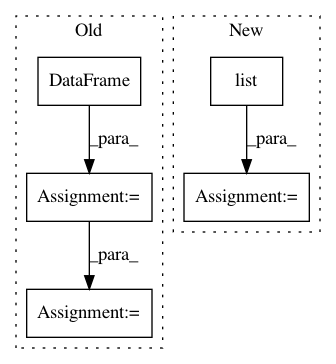

5aaa63d7ecf85d341fec9b758d17f2bf4cde6042,src/pudl/transform/ferc1.py,FERCPlantClassifier,predict,#FERCPlantClassifier#Any#Any#,1292
Before Change
new_grp = new_grp.values.reshape(1, len(self._years))
// Stack the new list of record_ids on our output DataFrame:
new_grp = pd.DataFrame(new_grp, columns=self._years)
out_df = pd.concat([out_df, new_grp])
// Save the seed record_id for use in indexing the output:
out_idx = out_idx + [self._best_of.loc[idx, "record_id"]]
After Change
data=[],
index=pd.Index([], name="seed_id"),
columns=self._years)
tmp_best = (
self._best_of.loc[:, ["record_id"] + list(self._years)]
.append(pd.DataFrame(data=[""], index=[-1], columns=["record_id"]))
)
// For each record_id we"ve been given:
for x in X:
// Find the index associated with the record ID we are predicting
// a grouping for:
In pattern: SUPERPATTERN
Frequency: 4
Non-data size: 5
Instances
Project Name: catalyst-cooperative/pudl
Commit Name: 5aaa63d7ecf85d341fec9b758d17f2bf4cde6042
Time: 2020-03-11
Author: zane.selvans@catalyst.coop
File Name: src/pudl/transform/ferc1.py
Class Name: FERCPlantClassifier
Method Name: predict
Project Name: nilmtk/nilmtk
Commit Name: 72f3f5bf50ed2d91cdcfbe2cf47120a2df8883cd
Time: 2014-11-26
Author: jack-list@xlk.org.uk
File Name: nilmtk/elecmeter.py
Class Name: ElecMeter
Method Name: _get_stat_from_cache_or_compute
Project Name: QUANTAXIS/QUANTAXIS
Commit Name: 89b43bbd55550d5c103a8b06281d9bc62e533680
Time: 2019-08-05
Author: yutiansut@qq.com
File Name: QUANTAXIS/QAData/data_resample.py
Class Name:
Method Name: QA_data_min_resample
Project Name: etal/cnvkit
Commit Name: e2ab4ccd6cb5e306c66182ac8ff1ad2d8183df1c
Time: 2016-10-07
Author: eric.talevich@gmail.com
File Name: cnvlib/gary.py
Class Name: GenomicArray
Method Name: _make_blank